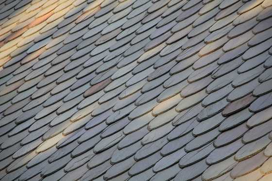
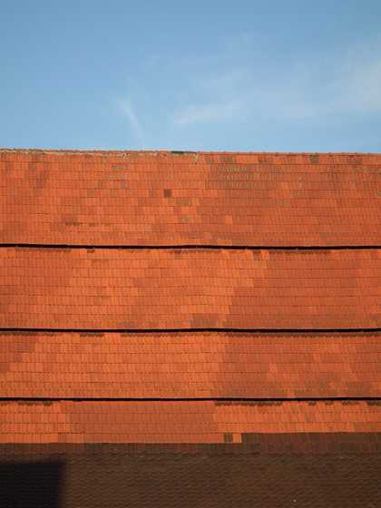
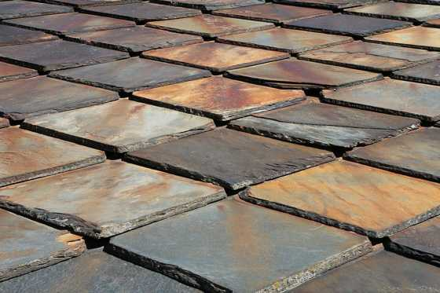
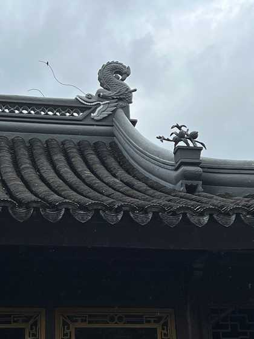
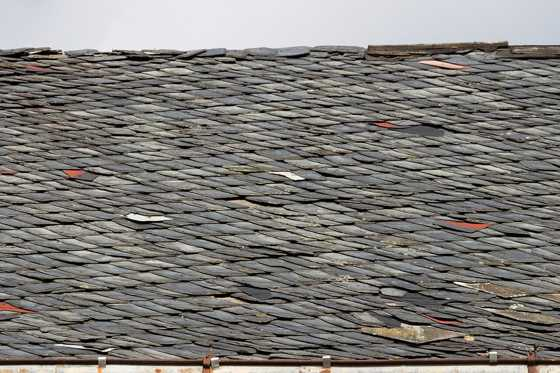
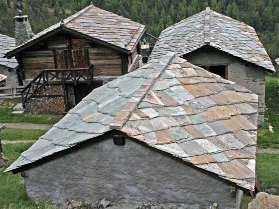

ABOUT
古民家の屋根の下で
「the roof」は、愛知県瀬戸市の末広商店街の近くにある古民家カフェです。紹介記事では、隠れ家のような古民家で、体にやさしいごはんやスイーツ、コーヒーなどのドリンクが楽しめるお店とされています。
2階の和室はレンタルスペースとして使えると紹介されています。瀬戸のまちさんぽの途中に、ひと息つく場所です。
店名の意味や開店のいきさつは確認できていません。屋根の写真は、屋号から制作側が選んだ国外・撮影地不明のイメージです。

MENU
ごはんと、甘いものと、お茶
ごはん、スイーツ、コーヒーなどのドリンクが紹介されています。ご予約が必要な「漆盆プレート」の案内も見られます。品名・価格など詳細は準備中です。


写真はフリー素材のイメージです。実際のメニューとは異なります。
ROOFS
いろいろな屋根(イメージ)
屋号にちなんで、世界のさまざまな屋根の写真を並べました。瀬戸市やお店の写真ではありません。






VOICE
口コミ
イメージ例
古民家の落ち着いた空気で、ついゆっくりしてしまいました。ごはんもやさしい味でした。
イメージ例
商店街を歩いたあとの休憩にぴったり。畳の席で足を伸ばせるのがうれしいです。
イメージ例
デザートとコーヒーのセットで一息。また季節を変えて来たいと思いました。
上の3件は制作側が作った例文で、実際のお客様の声ではありません。
PHOTO CREDITS
写真はフリー素材のイメージで、国外または撮影地不明のものです。実際のお店の写真ではありません。縮小・切り抜きなどの加工をしています。
- Rooftops of Brașov old town with the new district beyond (2025) / Paul Colin Hennig (firstdorsal.eu) / CC BY-SA 4.0(撮影地: ルーマニア・ブラショフ)
- Roof slates Eiktunet / Øyvind Holmstad / CC0 1.0(撮影地: ノルウェー)
- Rotes Ziegeldach 2011 HD / 4028mdk09 / CC BY-SA 3.0(撮影地: ドイツ・ハイデルベルク)
- Skifertak - slate roof natural stone cover / Øyvind Holmstad / CC BY-SA 4.0(撮影地: ノルウェー)
- Roof ridge ornament and tiles against a cloudy sky, Lan Su Chinese Garden / Z3lvs / CC0 1.0(撮影地: 米国オレゴン州ポートランド)
- Slate roof, Sosnová čp. 28, Opava District, Czech Republic 18 / Michal Klajban / CC BY-SA 4.0(撮影地: チェコ)
- Slate roof Switzerland / Michael C. Rygel / CC BY-SA 3.0(撮影地: スイス)
- White Cumulus Clouds against Blue Sky / Lance Vanlewen / CC BY-SA 4.0(撮影地: 撮影地不明)
- Weatherworn top of wooden table / W.carter / CC0 1.0(撮影地: スウェーデン)
- Porcelain teapot on windowsill (Unsplash) / Nathan Fertig / CC0 1.0(撮影地: 米国オハイオ州)
- Espresso Coffee 01 / Jubair1985 / CC0 1.0(撮影地: 撮影地不明)
- Bright turquoise mug sits on a wooden table by the window, reflecting morning light, inviting a quiet moment of reflection / Shixart1985 / CC BY 2.0(撮影地: 撮影地不明)
ライセンスの詳細は creativecommons.org をご覧ください。